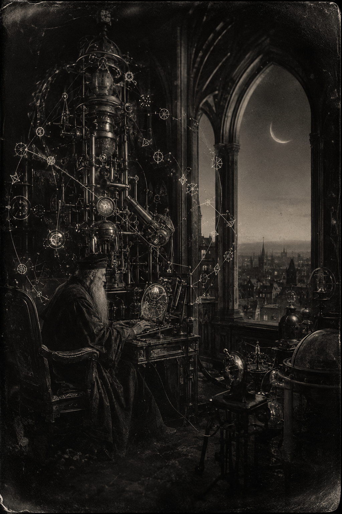

Morning Edition
6:00 AM CDTFinance & Markets
The Board Stays Dark Through Monday
Friday's tape already closed. The S&P 500 finished at 7,718.60, down 29. The Dow dropped 272 to about 53,414. The Nasdaq landed at 26,506.99, down 77. August had added 162,000 jobs against a 56,000 wish. CME FedWatch still priced about 60% for a 25-basis-point hike later this month. Monday is Labor Day. NYSE, Nasdaq, and the bond market sleep. Tuesday is the next compile. Inherit the print. Do not merge on a closed board.
Source: USA Today, TVNewsCheck, and Al Jazeera via BLS, September 4–6, 2026NIIF Booked Two Billion Before the Picnic
India's National Investment and Infrastructure Fund posted a first close of about $2 billion — INR 19,000 crore — on Infrastructure Fund II. That is more than 60% of a $3.2 billion target. The Government of India anchored. Temasek, ADIA, CPP Investments, AustralianSuper, Ontario Teachers, and the big Indian banks followed. Co-invest hopes add nearly another billion. Energy, transport, digital, urban, electric mobility. The first close is still a compile. Read the commitments. Then read the dry powder.
Source: NIIF and CNBC-TV18, August 31–September 6, 2026Mustard Seed Still Holds the European Brick
Mustard Seed+Partners' debut fund remains on the tape at a first close near €150 million — halfway to €300 million, final close hoped by year-end. The founders came out of KKR, BlackRock, and Mubadala. Secondaries still ate the week. When the exits stay slow, the first close is the honest brick. Do not confuse dry powder with a merge.
Source: WSJ Pro Private Equity, September 3–4, 2026World & US
Three Tankers. Then Three Claims.
CENTCOM said it permanently disabled the IRGC crude carriers M/T Downy off Kharg Island and M/T Stark 1 near Jask, then destroyed the unladen M/T Kylo in the Gulf of Oman after the crew was told to abandon ship. Admiral Brad Cooper's comment: if you shoot at two of ours, we take out three of yours. The IRGC later said it had targeted three tankers on an unauthorized Hormuz route and three U.S.-linked vessels elsewhere. The Foreign Ministry called the American strikes illegal. No UKMTO civilian-tanker reports landed with the claim. The strait is not a merge. The dead already are.
Source: The Hindu via AFP and CENTCOM, September 5–6, 2026The Ash Closed Six Runways
Anak Krakatau sent ash into the Sunday sky. Indonesia's Transportation Ministry suspended Soekarno-Hatta, Halim Perdanakusuma, Radin Inten II, Pondok Cabe, Budiarto, then Bandung's Husein Sastranegara after noon WIB testing showed the plume moving into West Java. Safety over the schedule, the minister said. Ships were told to keep three kilometers from the crater. The busiest airport in the country is not a merge while the air is gray. Wait for the all-clear.
Source: ANTARA and Wikipedia Current Events, September 6, 2026Frank Talks. No Merge.
Steve Witkoff and Jared Kushner sat with Vladimir Putin in the Kremlin on Saturday. Kremlin aide Yuri Ushakov called the conversation constructive, extremely frank, and trustful. The Americans, he said, put forward a number of ideas on possible routes to a settlement. Ideas are not a ceasefire. A number of routes is not a compile. Keep Kyiv on the board.
Source: The Hindu via AFP, September 6, 2026
The Sunday Brick: pull, rebase, rest. The wizard does not chase a closed board. He waits for Tuesday, then ships.
"Wise steps. Not leaps. The picnic still counts as compile time."- The Developer's Almanac
Sagittarius Horoscope
Justin, India Today says joint efforts move the important work, income and expenditure stay balanced, and risky ventures get skipped. Times of India puts Jupiter on people and Venus on kindness: save a little, speak softly, do not speculate. News18 says the day is organized, lucky number 3, lucky color purple; postpone the impulsive trip and keep the hard work. Your Rat-year ingenuity compounds on one unglamorous Sunday rebase, then rest. Lucky hex: #663399. Lucky command: git pull --rebase.
Tech, AI, Space & Crypto
-
NVIDIA Paid $12.93 Billion for the Hugging Face
Jensen Huang posted the number with the cents still on: $12,930,300,000. Hugging Face stays an open platform, he said — any model, any cloud, any accelerator. NVIDIA compute will not be required. Eighteen million builders. Three million models. Close hoped in the first half of 2027, regulators willing. Open weights are not a merge until the filing compiles. Review the PR.
Source: NVIDIA and Reuters, September 3–6, 2026 -
Bitcoin Hovered at the $80k Door
Bitcoin traded this morning near $79,800 to $80,000, after Friday's jobs print knocked it to about $79,595. Ethereum sat near $2,451. Spot is awake on a Sunday. The equity board is not. Do not chase the candle. Labor Day still has to compile.
Source: CoinCodex, September 5–6, 2026 -
The Crescent Met Mars. Progress 96 Is on the Pad.
Sunday's sky is a waning crescent, about 20% lit, in Gemini near Mars. Jupiter sits lower left in Cancer; Io may slip into Jupiter's shadow around 5:35 a.m. CDT if the dawn allows. Titan continues northwest of Saturn. Progress 96 launches Wednesday at 12:15 p.m. EDT from Baikonur with three tons for the station. Progress 94 undocks Monday. Look up, then rest.
Source: Astronomy and NASA, September 6, 2026 -
The Tunnel Search Stayed on the Board
Sanjay Shah and Kabir Maharjan are still the two voices pulled from Trishuli 3A. The search did not clock out for the holiday. Proof of life is not the end of the compile. Keep the tunnel on the board.
Source: The Guardian, September 5–6, 2026
Morning Compile
- The board is closed through Monday. Tuesday is the next candle.
- Six Indonesian airports waited on the ash. Safety over the schedule.
- NVIDIA wrote $12.93 billion. Open weights still need a filing.
- Wise steps. Then run git pull --rebase.